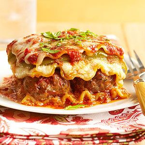

Lasagna

Lasagna tradicional
La siguiente receta es para realizar lasagna tradicional estilo italiano,
que a todos en casa les encantará. Además, toma muy poco tiempo de realizar.
Los ingredientes a utilizar son fáciles de conseguir y su sabor exquisito
hacen que no hay quien se pueda resistir.
Ingredientes
- 2 dientes de ajo.
- 1/2 cebolla.
- 1/2 kg de carne molida de res.
- 1 paquete de lasagna precocida.
- 2 envases de salsa de tomate.
- 1/2 kg de queso mozzarella.
- 100 g de queso paremsano.
Procedimiento
- Poner a calentar el horno a 180 ºC.
- Precalentar la salsa en una olla hasta que burbujee.
- Mientras se calienta la salsa, picar el ajo y la cebolla finamente.
- Sofreir el ajo y la cebolla con aceite durante 1 minuto a fuego medio.
- Agregar la carne al ajo y la cebolla y salpimentar.
- Cocer la carne en la sarten sin dejar que se deshidrate (que conserve aun jugo).
- Colocar un poco de salsa en el refractario (suficiente para que cubra la parte inferior),
y cubrir con tres láminas de pasta.
- Agregar la carne a la salsa.
- Colocar algo de mezcla de salsa y carne sobre las láminas.
- Agregar una capa de queso mozzarella y parmesano sobre la carne.
- Agregar de nuevo 3 láminas de pasta y repetir los pasos 9, 10 y 11.
- Al agotar la carne con la salsa cubrir simplemente con el remanente de queso mozzarella y parmesano.
- Colocar el refractario en el horno a 180 ºC durante 35 minutos, sin cubrir.
- Dejar enfriar durante 20 minutos sin cubrir, ¡y listo!